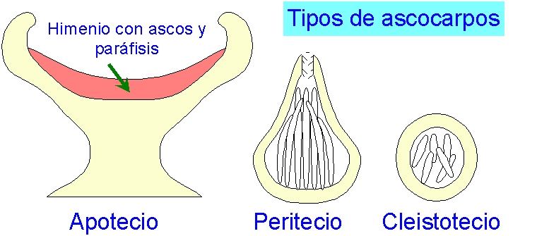

Tema 11.- Clase Ascomicetos
Guión para el tema
11 del
programa de Botánica
I (Grado de Biología).
C. Romero Zarco, Departamento de
Biología vegetal y Ecología, Universidad de Sevilla,
2001-2017 -
[Eumicotas-Quitridiomicetos] [Zigomicetos] [Ascomicetos] [Basidiomicetos] [Deuteromicetos] [Simbiosis]
1.- Caracteres generales y
reproducción.-
- Grupo más complejo y numeroso de los hongos
- Hifas tabicadas, con
septos provistos de poros sencillos.
- Células
reproductoras sin flagelo
- Rep. asexual (fase conídica o imperfecta)
- Conidios:
- blastoconidios
(gemación) y
- taloconidios
(fragmentación)
- Agrupación
de conidióforos: acérvulos y picnidios:
- Rep.
sexual (fase ascógena o perfecta)
- Homotalismo
o heterotalismo bipolar
- Plasmogamia
por:
tricogamia,
contacto gametangial, espermatización, somatogamia y, en
grupos primitivos, fusión gametangial
- Cariogamia
retardada
=> dicariofase: hifas
ascógenas
- Crecimiento de hifas ascógenas por
uncinulación
- Cariogamia en los extremos de las hifas
ascógenas => zigoto = c. m. del asco
- Meiosis zigótica => asco con ascósporas
(8 normalmente)
- La
mayoría con cuerpo fructífero plectenquimático: ascoma, dentro del
cual se desarrollan las hifas ascógenas y los ascos
- Ascomas
simples (ascocarpos):
apotecio, peritecio y cleistotecio

- Ciclo haplo-dicariofásico,
con haplofase dominante, excepto en ciertas levaduras que
tienen ciclo digenético
2.- Ecología e importancia
- 75 % de
los hongos descritos son Ascomicetos: unas 30.000 sp.
conocidas, además de c. 20.000 sp. de micobiontes
liquénicos.
- Se
encuentran en todo tipo de hábitats (incluso en el mar) y
son muy abundantes en ecosistemas forestales.
- Organismos
fermentadores
de
interés económico: pan, cerveza, vino, ciertos quesos, etc.
- Productores
de
antibióticos,
enzimas,
alcaloides y otras moléculas orgánicas de interés biomédico
o industrial.
- Numerosos
patógenos de plantas y animales
- Simbiontes
liquénicos
y
micorrízicos (trufas)
- Organismos
de
investigación:
Neurospora, Saccharomyces
3.- Diversidad, modos de vida y ejemplos
- Subcl. Tafrinomicétidos: 120
especies biotrofas que producen deformaciones de los tejidos
en plantas; muy diferentes del resto por su micelio
vegetativo dicariótico (!); no forman ascoma.
- Subcl. Endomicétidos: incluye
las levaduras productoras de ascos y otros hongos con
micelio poco desarrollado; no forman hifas ascógenas ni
ascoma. Ejemplo: Saccharomyces cerevisiae
- Subcl. Laboulbeniomicétidos:
unas 1700 especies comensales o parásitos poco agresivos de
artrópodos, con micelio muy simple de 50 mm a
1 mm sobre el exoesqueleto del hospedante.
- Subcl. Ascomicétidos: con
hifas dicarióticas y ascoma.
- Ciclo
de vida típico de un ascomiceto ascocárpico
- Ejemplos
de
ascomicetos
con
apotecio:
- Peziza,
Morchella, Helvella, Tuber
- Ejemplos
de
ascomicetos
con
ascostroma: Cordiceps militaris, Claviceps
purpurea
Referencias: Alexopoulos & Mims (1985)
Introducción a la Micología, Ed. Omega, Barcelona. Para la
clasificación se sigue a Llimona en Izco & al. (1997) Botánica,
Ed. McGraw-Hill.
Internet: ver referencias en el guión del
tema 9
Octubre de 2001 / enero de
2017